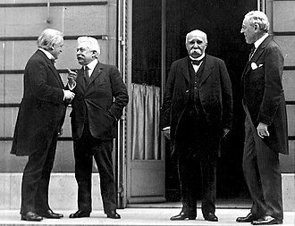

Part II · The Great War · Chapter 6
Versailles, 1919 — the comparison and receipts
1 The ladder
Eight classrooms at the same door, and each one puts a different claimant outside it: books whose injured party is the defeated, books that count who was not let in, and books that watch the settlement from outside Europe. The grouping is not a ranking; grievance is not a quantity. Ukraine’s volume begins in 1945, Germany’s is a booklet on National Socialism, and the Kazakh book is a national history rather than a world one; the receipts say what was looked for in each.
| Classroom | Who was shut out | One-line tag |
|---|---|---|
| The defeated | ||
| UK · Lowe 2013 |
“The Germans were not allowed into the discussions at Versailles; they were simply presented with the terms and told to sign. Although they were allowed to criticize the treaty in writing, all their criticisms were ignored except one.” Mastering Modern World History, 5th ed. · §2.8(b) “Why did the Germans object, and how far were their objections justified?”, PDF p. 69 |
Germany, as plaintiff with a numbered case |
| BY · Кошелев 2021 |
«Версальский мир был унизителен для Германии. Он стал одним из важнейших источников реваншизма в этой стране и в немалой степени способствовал формированию фашизма.» “The Versailles peace was humiliating for Germany. It became one of the most important sources of revanchism in that country and contributed in no small degree to the formation of fascism.” Всемирная история, 11 кл., БГУ 2021 · § 13, p. 103 |
Germany, and the verdict runs to 1933 |
| IT · Sabbatucci–Vidotto 2004 |
«…l’esigenza di punire in qualche modo gli sconfitti – considerati i responsabili della guerra e non rappresentati alla conferenza…» “…the requirement of punishing the defeated in some way — considered the ones responsible for the war and not represented at the conference…” |
The defeated, and Russia in a parenthesis |
| Not let in | ||
| RU · Чубарьян 2023 |
«Советская Россия не была представлена на Парижской мирной конференции и не только была отстранена от создания системы послевоенного мирного устройства, но и стала объектом интервенции западных держав.» “Soviet Russia was not represented at the Paris Peace Conference and was not only removed from the creation of the system of the post-war peace settlement, but also became an object of intervention by the Western powers.” |
An empty chair, and four lines nobody else prints |
| US · OpenStax 2022 |
“Japan had requested a clause affirming the equality of all nations regardless of race… Several powers supported its inclusion, but Australia (which allowed no non-White immigration) and then the United States stated their opposition. Wilson claimed a unanimous vote was necessary to include it, though this was not true for any other clause.” |
The widest cast, its own state named |
| Seen from outside Europe | ||
| IN · NCERT 2022+ |
“On 4 May 1919, an angry demonstration was held in Beijing to protest against the decisions of the post-war peace conference. Despite being an ally of the victorious side led by Britain, China did not get back the territories seized from it. The protest became a movement.” Themes in World History, Class XI · “Paths to Modernisation,” p. 168 — the entire 1919 settlement in this volume |
China only; the conference has no name |
| CN · 纲要 上 2019 |
巴黎和会上，强权战胜了公理，中国遭遇严重外交失败，这引发了爱国青年的极大愤慨。 “At the Paris Peace Conference, power triumphed over justice, and China suffered a serious diplomatic defeat; this provoked enormous indignation among patriotic youth.” |
China only; the treaty has no name |
| SD · MoE 2009 |
«…وهو المبدأ الذي تمسكت به الشعوب العربية في مطالبتها بالاستقلال.» “…and it is the principle to which the Arab peoples clung in their demand for independence.” |
The Arab world; Germany never appears |
2 The tell
Watch one grammatical slot. Lowe: “The Germans were not allowed into the discussions at Versailles.” Sabbatucci–Vidotto: the defeated, “considered the ones responsible for the war and not represented at the conference.” Chubaryan: “Soviet Russia was not represented at the Paris Peace Conference.” Three books, one construction, three different occupants — and the Russian sentence is not about Germany at all. Sabbatucci–Vidotto holds two of the readings at once and grades them: the defeated get a clause in the main argument, the socialist Republic gets a parenthesis three pages later. A bracket is a measurement.
The Italian manual also gives the same word to two injured parties. Its section on the German settlement carries the running head «L’umiliazione della Germania», and forty pages on, the Weimar Republic is “indissolubly associated with defeat, with the humiliation of Versailles.” Then, a hundred and twenty pages later, in the chapter on China, the running head reappears — «L’umiliazione di Versailles» — and this time the humiliated party is China, sacrificed by the Western powers, “which recognised Japan’s right to succeed defeated Germany in the economic control of the region of Shantung.” Same noun, same treaty, two owners, one book. It is the nearest any classroom here comes to admitting that the question this chapter asks has more than one answer.
“In January 1919, the victor nations of the First World War convened a ‘peace conference’ in Paris, France; China attended the conference as one of the victor nations.”
CN · 中外历史纲要 上 (2019) · 第21课, printed p. 137 — the quotation marks are the textbook’s ownThe Chinese volume answers the question by refusing the vocabulary. 凡尔赛 — Versailles — is not in the book at all. The instrument China declines to sign is 和约, “the peace treaty,” unnamed. The conference is 巴黎和会 when it is being described and “和平会议” — in quotation marks — at the moment it convenes. The verb that hands Shandong to Japan carries 竟, an adverb of outrage: they went so far as to decide. In this classroom 1919 is not a treaty with a name; it is the year the century of unequal treaties produced one more, this time from an ally, and the sentence a student memorises is 强权战胜了公理 — power triumphed over justice.
NCERT does the same thing in a third of the words and without a hint of grievance in the voice. Three sentences, no treaty, no Wilson, no sum, no League — the whole 1919 settlement in this volume is “the decisions of the post-war peace conference,” agentless and abstract, followed by the line that carries the load: “Despite being an ally of the victorious side led by Britain, China did not get back the territories seized from it.” Led by Britain. An Indian textbook describing a Chinese grievance selects, out of all the available nouns, the empire that governed India. Nothing further is said. Nothing further needs to be.
“Discuss this idea with your classmates, setting out your opinion of it and supporting it with arguments.”
SD · التاريخ للصف الثالث (2009) · the activity printed directly under the definition of the mandate system, p. 189The Sudanese book is the one column where Versailles is a place and not a document. “After the end of the war the European states called one another to Versailles in Paris in France to hold the Peace Conference of 1919.” Germany is not on these two pages at all — no Article 231, no reparations, no hundred thousand men. What arrives at Paris is Wilson, “who brought with him his Fourteen Principles for the sake of guaranteeing world peace, the most important of which was the principle calling for giving colonised peoples the right of self-determination — and it is the principle to which the Arab peoples clung in their demand for independence.” Then Britain, France and Italy “clung to their colonial interests in the Middle East while attempting to reconcile them with Wilson’s liberationist principles,” San Remo divides the region, and the chapter’s verdict is a single image: “a new link in the chain of colonialism.” The book then prints the mandate’s own justification in the mandate’s own words — a system “devised by cunning English politicians such as Lord Smuts and Lord Lugard,” summed up as “assigning responsibility for governing the backward states to the civilised states for a period of time, so as to take them by the hand on the path of progress” — and hands it to the class to argue with rather than answering it for them.
Three other books grade that same instrument in a line each: Lowe calls the mandate arrangement “really a device by which the Allies seized the colonies without actually admitting that they were being annexed,” Chubaryan calls it “the division of colonial booty traditional for imperialist predators,” and Koshelev states it with nobody in the sentence at all — “Syria, Lebanon, Iraq and Palestine, which had belonged to Turkey, were transferred as mandated territories to England and France.” Four countries change hands in a clause with no one in it.
Lowe is also the book that gives the Arabs a leader from somewhere else. In his section on Turkey they “had been hoping for independence as a reward after their brave struggle, led by an English officer, T. E. Lawrence (Lawrence of Arabia), against the Turks” — the struggle is Arab, the adjective is generous, and the command is English. Twenty pages earlier, the same book stages 1919 as a case with a plaintiff, and the plaintiff is Germany: it asks “Why did the Germans object, and how far were their objections justified?” and answers in seven numbered charges, each with a British verdict attached — “Some historians feel that the Germans were justified”; “This is probably not a valid objection.” Even the German word for the complaint is handled with tongs: Lowe puts ‘Diktat’ in quotation marks and hands it to Hitler — the argument “much used by Hitler, that because the peace was a ‘Diktat’, it should not be morally binding” — then supplies the counter-charge, that the Germans “could scarcely have expected any better treatment after the harsh way they had dealt with the Russians at Brest–Litovsk – also a ‘Diktat’.” Sabbatucci–Vidotto uses the same word with no gloves on and in its own voice: the treaty “was a true and proper imposition (a Diktat, as it was then defined with a German term), suffered under the threat of military occupation and of the economic blockade.” One classroom quotes the word; the other means it.

Which leaves the four lines only one classroom prints. On page 51 of the Russian volume, between the Fourteen Points and the terms imposed on Germany, it reports that representatives of “colonial and dependent countries of the East” arrived in France and “were not granted the attention of the conference participants, and left Paris disappointed.” They have no names, no countries and no delegations; they arrive, they are ignored, they go. It is the smallest scene on this ladder and the only one in which the excluded are shown physically present, in the building, being not-attended-to. OpenStax gets closest to it from the other direction, and pays for the honesty with its own flag: the racial-equality clause was killed by “Australia… and then the United States,” and the Allied tally of the war’s destruction “did not include African lives lost in the fighting in Africa.” Between them, the Russian volume and the American one have put on the page the people Paris did not count. Neither joins its own sentence to the other’s. Nobody here writes the conference as one room with everybody’s absence in it.
3 Credit where due
Fairness, paid in installments
OpenStax (US) earns it, and earns it at its own expense. It is the only book on this ladder that widens the cast beyond one grievance and then names its own government as the party that closed the door — Australia and “then the United States” against the racial-equality clause, and Wilson claiming a unanimity rule that, as the book points out, applied to no other clause. Four pages later, under the heading “In Their Own Words,” it prints a long passage by the Japanese politician Ōkuma Shigenobu on “the mistaken theory” of white superiority — a primary source chosen to argue against the book’s own country. What that risk buys a student is the one thing no other column offers: the room seen from the side of the people who were not admitted to it, printed by a book with something to lose by admitting it.
4 Where this stops being true
Limits
This ladder is eight pinned editions, not eight countries and not eleven narrators. Every book here that reaches 1919 has something to say about it, so nobody in this chapter is looking away from the year. Where it is missing — Ukraine’s volume runs 1945–2018, Germany’s booklet starts with National Socialism — the silence is a syllabus boundary, not a decision about Paris.
The Sudanese lines carry the least weight of anything here, and they are marked wherever they appear: the Arabic came out of that PDF with its ligatures mangled, so every Arabic quotation above is a reconstruction to standard orthography and still wants checking against the printed page. One reconstruction is genuinely uncertain — the extraction places a comma inside the phrase “the right of self-determination,” which is probably a typesetting artefact but could be a comma in the printed book.
Where a book is wrong its wording still stands as printed, and two mistakes on those pages touch what this chapter says. The Sudanese page credits the mandate system to “Lord Smuts and Lord Lugard”: Frederick Lugard was indeed a British peer, but Jan Smuts was South African and never a lord. And the same book’s table of mandates lists Egypt, Sudan, Algeria, Libya and Eritrea among them, which the League never did. That one is an argument rather than a slip, and the book makes it in the paragraph beneath the table: the Arab states fell under the colonisation of the powers shown “with a difference in the names — mandate, protectorate, trusteeship and so on — except that the content of colonialism remains one.”
The thirteenth part is the one section here that leaves the textbooks behind; it is ordinary history, and the claim in it is deliberately narrow: the treaty produced the institution that sets the standard, not the eight-hour day itself. How much of any national working week today descends from Convention No. 1 rather than from domestic law and domestic strikes is not measurable, and this chapter does not measure it.
Finally, none of these books is a history of the conference. There are no delegate diaries here, no committee minutes, no King–Crane Commission, no Ho Chi Minh at the Hotel Crillon, no Zionist Organization submission, no Korean or Irish petitions. If you want to know what it was like to wait in a Paris hotel in 1919 for a principle to be applied to you, every column on this ladder will leave you unsatisfied — including the four-line Russian paragraph that is the closest any of them comes.
5 Receipts
- UK — Norman Lowe, Mastering Modern World History, 5th ed. (Palgrave Macmillan 2013): §2.7 “The problems of making a peace settlement,” PDF pp. 66–67 (Illustration 2.1, “The three leaders at Versailles: (left to right) Clemenceau, Wilson and Lloyd George,” p. 67); §2.8 terms and German objections, pp. 68–73 (War Guilt clause and £6,600 million p. 68; “not allowed into the discussions” and ‘Diktat’ p. 69; mandates as “a device” p. 70; Keynes, “an economic adviser to the British delegation at the conference,” urging “£2000 million, which he said was a more reasonable amount,” p. 73); §2.10 Sèvres and the Arab mandates, p. 75; §2.11 verdict, p. 76. The ILO “under its French socialist director, Albert Thomas” is in the League chapter and “is still operating today” is in the UN chapter; neither mention meets the treaty.
- BY — В. С. Кошелев и др., Всемирная история, 11 кл. (БГУ 2021), § 13 “Версальско-Вашингтонская система международных отношений”: key idea and the “Big Three” — Wilson, Lloyd George and Clemenceau — p. 97; Clemenceau on the 14 points and the 10 commandments p. 98; all responsibility placed upon Germany, Germany loses ⅛ of its territory, Syria/Lebanon/Iraq/Palestine “were transferred” p. 99; humiliating peace → revanchism → fascism p. 103. The book’s sharpest line on the treaty — “In order to destroy Germany the treaty was too soft; in order to punish it, too humiliating” — is a boxed extract from the historian A. I. Patrushev with a question attached, not the textbook’s own voice, and is not quoted in this chapter for that reason. no figure reparations sum, anywhere in the section.
- IT — G. Sabbatucci & V. Vidotto, Il mondo contemporaneo (Laterza 2004), § 13.12 “I trattati di pace e la nuova carta d’Europa,” pp. 295–299: the defeated “not represented” p. 295; the “four great ones,” Orlando who “though figuring nominally among the ‘four great ones’, in reality he played a marginal role,” and the Diktat, p. 296; the socialist Republic in parenthesis p. 298. Reparations of 132 billion gold marks, “frightening for those times,” in the Weimar chapter, p. 334. The eight-hour day won “almost simultaneously” across Europe, p. 327. “L’umiliazione di Versailles” as a running head over China, § 20.5, pp. 455–456.
- RU — А. О. Чубарьян, Всеобщая история. Новейшая история 1914–1945 гг., 10 кл. (Просвещение 2023), § 6: conference opens 18 January 1919, the “Big Four,” the delegations from the East who left disappointed, and the peace terms “predatory and humiliating,” p. 51; Article 231 and the reparations total “determined,” with no figure in the section, p. 52; “Fragility of the Versailles system,” Soviet Russia not represented, and the “division of colonial booty,” p. 54. Chubaryan’s “Big Four” and Koshelev’s “Big Three” describe different moments of the same council.
- US — OpenStax, World History, Volume 2: from 1400 (2022), ch. 12 “The Interwar Period”: “(except Russia)” p. 476; the Fourteen Points p. 477; the 436 pages and fifteen parts, reparations “over $30 billion in 1919 dollars,” Shandong without consulting the Chinese, the racial-equality clause, African lives not tallied, and the “war guilt” clause, all p. 479; May Fourth p. 480; Ōkuma Shigenobu, Illusions of the White Race, “In Their Own Words,” p. 484.
- IN — NCERT, Themes in World History, Class XI (post-2022 rationalized): the whole settlement, three sentences, p. 168; timeline entry “1919 May Fourth Movement,” p. 170. 0 mentions Versailles · reparations · League of Nations · Fourteen Points · Shandong — searched across the volume.
- CN — 《中外历史纲要 上》 (2019), 第21课「五四运动与中国共产党的诞生」: unit lede, printed p. 136; “power triumphed over justice,” the “peace conference” in quotation marks, the transfer of Shandong, the 3,000 students of 4 May, the Shanghai strikes of 3 June, and the delegates’ refusal to sign, printed p. 137 (PDF p. 141); timeline entry «1919 年 5 月 4 日 · 五四爱国运动爆发», printed p. 210. 0 mentions 凡尔赛 (Versailles) in 217 pages. 1 mention 国际联盟 (League of Nations) — the Lytton Commission, 1932. 赔款, the word for an indemnity, runs through the volume attached to Nanjing, Beijing, Shimonoseki and the Boxer settlement — money China pays, never money Germany pays.
- SD — وزارة التربية والتعليم, التاريخ للصف الثالث (Khartoum 2009): Peace Conference 1919, Wilson’s Fourteen Principles, San Remo, the definition of the mandate, the “cunning English politicians” line and the activity, printed p. 189; the mandate table and “from the Ocean to the Gulf,” printed p. 190; “Peace Conference (Versailles)” in the unit date-table, printed p. 191. On the page before, students are asked to lay the mandate map over the map of spheres of influence “that were drawn earlier” — Sykes–Picot, unnamed in the instruction. Printed pages = PDF pages − 8; every Arabic line here is a reconstruction from a ligature-mangled extraction. 0 mentions Germany, reparations, Article 231, war guilt — on the peace-conference pages.
- outside the syllabus · searched anyway UA — Гісем/Мартинюк, Всесвітня історія, 11 кл. (2019), syllabus 1945–2018: Версал- 0 · репарац- 0 · Ліг- Націй 0 (the only “Ліга” hits are the Lega Nord and the Arab League) · Чотирнадцят- 0 · Паризьк- 1, and it is the Paris agreement on Vietnam, 1973. The volume does carry “(ILO, founded in 1919)” in a list of UN agencies.
- outside the syllabus · searched anyway DE — bpb Informationen zur politischen Bildung Nr. 316, «Nationalsozialismus: Krieg und Holocaust» (2012), syllabus 1939–1945 and the reckoning: Friedenskonferenz 0 · Reparation 0 · Kriegsschuld 0 · Völkerbund 4 (all of them Germany leaving it) · Versailler 10, every one of them a provision the National Socialist state revised. The booklet’s single evaluative phrase on the settlement is on p. 5 — the European powers kept their illusions about German policy so long because of «den einseitigen Bestimmungen des Versailler Friedensvertrages von 1919», “the one-sided provisions of the Versailles peace treaty of 1919,” whose partial revision was by then regarded in London and Washington as a legitimate German claim. The one book in this corpus written from inside the country the treaty was imposed on spends its one sentence on 1919 explaining appeasement.
- not a peer here KZ — a national history rather than a world one, so it does not stand beside these eight on a world event.
- searched everywhere The thirteenth part. Words looked for, for the eight-hour day: eight-hour/eight hours · otto ore · восьмичас-/8-часов · 8-годин- · 八小时 · acht Stunden · ساعات. For the institution: International Labour Organi-/ILO · Международная организация труда/МОТ · Міжнародна організація праці/МОП · organizzazione/ufficio internazionale del lavoro · 国际劳工 · منظمة العمل الدولية. Across all eleven classrooms, none connects the eight-hour day to the Treaty of Versailles. Four print an eight-hour day at all (IT for Europe in 1919, p. 327; UK for Lenin’s decree and Roosevelt’s NRA; US for American factory law and the Bolsheviks’ programme; UA for the occupation of Japan in 1945) — and none of the four is within reach of Paris. Two of eleven name the International Labour Organization anywhere (UK, as a League success “under its French socialist director, Albert Thomas,” and in the UN chapter as an outfit that “is still operating today”; UA, which supplies the only date anyone gives it, “(ILO, founded in 1919),” inside a list of UN agencies) — and neither says the treaty made it. One book counts the treaty’s parts (US), and it is the book that never opens the one this section is about. Treaty text: Part XIII, Articles 387–427; Convention No. 1 (Hours of Work, Industry), Washington, 28 November 1919.
- page conventions Cited as found. Russian and Belarusian printed pages are one less than the PDF’s; Chinese printed pages are four less; Sudanese printed pages are eight less. The Lowe extraction carries no printed page numbers, so PDF pages are given with the section number, which is the durable reference in that book. Italian and OpenStax numbers are the ones printed in the extraction.
Now look up what your textbook calls it.